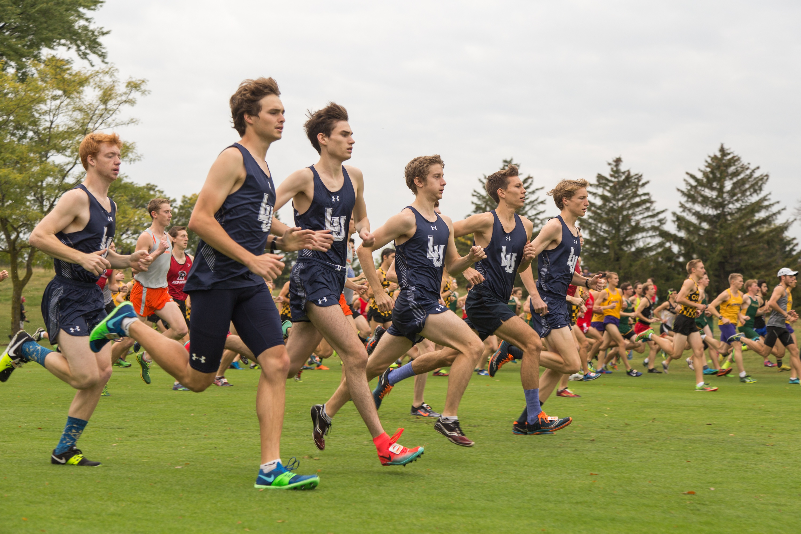
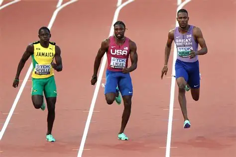

Cross Country and Track
Here are some reasons why I like doing sports after school.
- It helps you relax after a long day at school
- It gives you time to hang out with your teammates
- Going outside after sitting all day is a nice change of pace
Here is some more info about Cross Country taken from Wikipedia: Cross country running is a sport in which teams and individuals run a race on open-air courses over natural terrain such as dirt or grass. The course, typically 3–12 kilometres (1.9–7.5 mi) long, may include surfaces of grass and earth, pass through woodlands and open country, and include hills, flat ground and sometimes gravel road and minor obstacles.
Click here to read more about Cross Country!
Here is some info about Track also taken from Wikipedia: Track and field is a sport that includes athletic contests based on running, jumping, and throwing skills.
Click here to read more about Track and Field
My Source Image

This color scheme is an analogous one and I chose this color scheme because I wanted my webpage to feel warm and welcoming and the purple and light brown tones achieve that goal well.